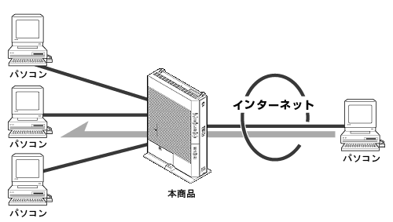

|
|
本商品に接続したサーバをインターネットへ公開できます。 |
|  |
| 下記の設定が必要です。 |
|
| ■ パソコンの設定 |
【サーバとなるパソコンのIPアドレスの設定をする】
サーバとして公開するパソコンに、プライベートIPアドレスを設定します。
DHCPで割り当てたIPアドレスでサーバ公開した場合、IPアドレスが変更されたときに公開できなくなる
恐れがあります。
外部にサーバを公開するときは、データ保全のため十分なセキュリティ設定を行ってください。
セキュリティの設定を行わないと、サーバが不正侵入や盗聴、妨害、データの消失、
破壊に遭う可能性があります。
|
|
| ■ 本商品の設定 |
本商品に下記の設定を行います。
|
| 1. |
「詳細設定」-「静的NAT設定」をクリックする |
| 2. |
「ワンタッチ設定」で下記のように設定する
【Webサーバを公開する場合】
(1)Webサーバ設定の「Webサーバを外部に公開する」にチェックを付ける
(2)Webサーバ設定の「WebサーバのIPアドレス」に公開するパソコンのIPアドレスを入力する
【FTPサーバを公開する場合】
(1)FTPサーバ設定の「FTPサーバを外部に公開する」にチェックを付ける
(2)FTPサーバ設定の「FTPサーバのIPアドレス」に公開するパソコンのIPアドレスを入力する
|
| 3. |
［設定］をクリックする |
| |
＜お知らせ＞
- 本商品で外部にサーバを公開する場合は、固定IPサービスを利用する、もしくはダイナミックDNSサービスを利用する必要があります。詳しくは固定IPサービスを提供するプロバイダ、もしくはダイナミックDNSサービス提供事業者にお問い合せください。
|
|
|
|
↑ページのトップへ |